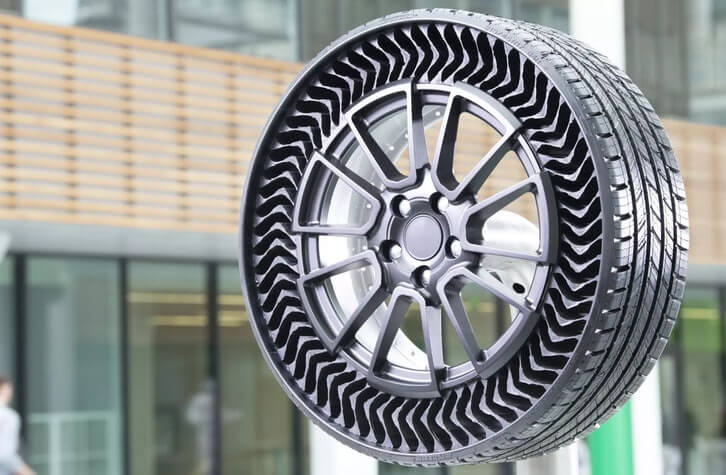
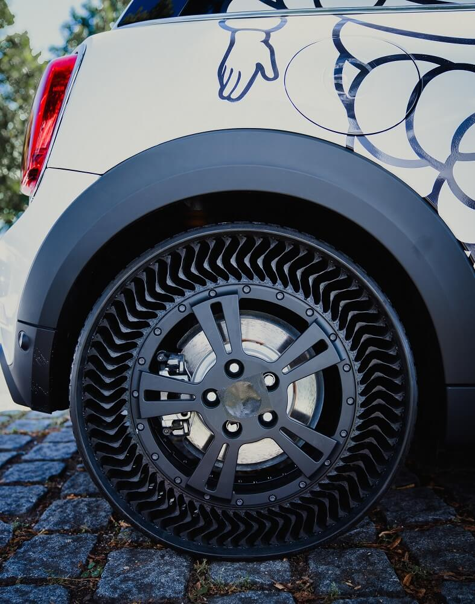
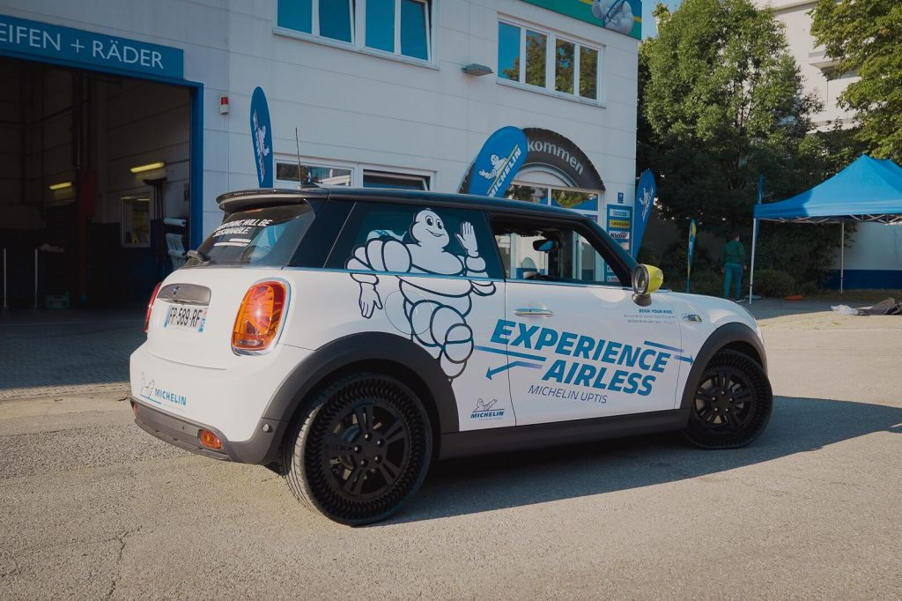

မစ်ချလင်ကတော့ လက်မလျှော့ပါဘူး။ သူတို့က လေမဲ့တာယာသာ အောင်မြင်ရင် ဒီတာယာဟာ သာမန် တာယာတွေထက် ပိုပြီးလဲ အကြမ်းခံမှာ ကြာကာခံမှာ ဖြစ်သလို သဘာဝပတ်ဝန်းကျင်ကို ထိခိုက်မှုကိုလဲ လျှော့ချနိုင်မယ်လို့ ယုံကြည်နေပါတယ်။
ယခုနောက်ဆုံး ထုတ်ဖေါ်ပြသလိုက်တဲ့ လေမဲ့တာယာကတော့ မစ်ချလင် အပ်ပ်တစ် (Michelin’s Uptis) လို့ အမည်ပေးထားတဲ့ လေမဲ့တာယာ အမျိုးအစား ဖြစ်ပါတယ်။ ဒီတာယာက ထုတ်လုပ်ရောင်းချဖို့ ရည်ရွယ်ထားတာ မဟုတ်ပဲ သရုပ်ပြ ဖို့အတွက်ပဲ ထုတ်လုပ်ထားတာပါ။ ဒီတာယာကို ဂျာမနီနိုင်ငံ မြူးနစ်မြို့မှာ ကျင်းပနေတဲ့ ကားပြပွဲ တစ်ခုမှု ထုတ်ဖော်ပြသခဲ့တာပါ။ ဒီတာယာမှာ လေအစား ရာဘာ စပုတ်တိုင် အသေးစားလေးတွေ အမြောက်အများ ထည့်သွင်းပြုလုပ်ထားပါတယ်။ ဒီစပုတ်တိုင်လေးတွေက ကားတာယာကို ပိန်ရှုံ့မသွားအောင် ထိန်းထားပေးတာ ဖြစ်ပါတယ်။ အထဲမှာ ပေါက်ထွက်စရာ လေမထိုးထားတဲ့အတွက် ဒီတာယာကို သံချောင်းနဲ့ ထိုးမိရင်လဲ ပေါက်ထွက်သွားတာ၊ လေလျှော့သွားတာမျိုး မဖြစ်တော့ပါဘူး။

ဆက်စပ်ဆောင်းပါး။ ကားတာယာနှင့် ပတ်သက်ပြီး သိသင့်သမျှ
ဒီတာယာက သာမန် လေထိုးတာယာတွေလို ပေါက်သွားတာမျိုးမရှိတဲ့အပြင် နောက်ကောင်းတာ တခုကတော့ လေလျှော့သွားလို့ ဘီးပြားသွားတာမျိုးလဲ မရှိပါဘူး။ လေလျှော့ပြီး ဘီးပြားနေတဲ့ တာယာတွေရဲ့ သက်တမ်းဟာ ခနလေးနဲ့ ကုန်သွားတတ်ပါတယ်။ အခုလို လေလျှော့တာမျိုး မရှိတဲ့အတွက် ဒီ လေမဲ့တာယာတွေရဲ့ သက်တမ်းဟာလဲ သာမန်တာယာတွေရဲ့ သက်တမ်းထက် ၃ ဆလောက် ပိုခံမယ်လို့ မစ်ချလင်က ပြောပါတယ်။ ဒီလို လေလျှော့လို့ ကားတာယာ သက်တမ်းကုန်သွားပြီး လွှင့်ပစ်ရတဲ့ တာယာ အရေအတွက်ဟာ တစ်နှစ်ကို အလုံးရေ သန်း ၂၀၀ လောက် ရှိမယ်လို့ မစ်ချလင် ကုမ္ပဏီက ခန့်မှန်းပါတယ်။ ဒီ တာယာတွေဟာ သဘာဝပတ်ဝန်းကျင်ကို ကြီးမားတဲ့ ဆိုးကျိုးတွေ ဖြစ်စေနိုင်ပါတယ်။ လွှင့်ပစ်ရတဲ့ ကားတာယာ အရေအတွက် နည်းလာတာဟာ သဘာဝ ပတ်ဝန်းကျင်အတွက်လဲ ကောင်းမွန်တဲ့ အထောက်အပံ့တခု ဖြစ်ပါတယ်။

ဒါတွေအားလုံးက သတင်းကောင်းတွေချည်းပါ။ ဒါပေမယ့် မစ်ချလင်က ဒီ လေမဲ့တာယာကို ထုတ်လုပ်နိုင်ဖို့ ကြိုးစားနေခဲ့တာ အခုဆို ၁၆ နှစ်တောင် ရှိပါပြီ။ လေမဲ့တာယာက အပြောသာ လွယ်ပေမယ့် တကယ် ထုတ်လုပ်ဖို့က ထင်သလောက် မလွယ်ပါဘူး။ ပြီးတော့ ဒီ တာယာအပေါက်လေးတွေထဲ ဝင်လာမယ့် သဲတွေ ရွှံ့တွေကို ဘယ်လို ပြန်ထုတ်မလဲ ဆိုတဲ့ ပြဿနာကလဲ ရှိပါသေးတယ်။ ဒီသဲတွေ ရွှံ့တွေ ကျောက်ခဲလေးတွေဟာ တာယာရဲ့ စွမ်းဆောင်ရည်ကို ကျဆင်းစေနိုင်ပါတယ်။ မစ်ချလင်ကတော့ အထဲဝင်တဲ့ ရေထွက်ဖို့ အပေါက်လေးတွေ ဖေါက်ပေးထားတယ်လို့ ဆိုပမယ့် ရွှံ့တွေ သဲတွေ ဘယ်လို ထုတ်မလဲ ဆိုတာနဲ့ ပါတ်သက်လို့တော့ ဘာမှ မပြောပါဘူး။

မစ်ချလင်ကတော့ လေမဲ့တာယာကို ထုတ်လုပ်နိုင်ဖို့ နီးစပ်နေပြီလို့ ယုံကြည်နေပါတယ်။ GM ကားကမ္ပဏီနဲ့ ဖက်စပ်ပြီး GM ကားတွေအတွက် လေမဲ့တာယာကို ၂၀၂၄ ခုနှစ်လောက်မှာ စတင်ထုတ်လုပ်နိုင်ဖို့ လုံးပမ်းနေပါတယ်။ လက်ရှိမှာ ဒီကုမ္ပဏီ နှစ်ခုဟာ လေမဲ့တာယာကို ခွင့်ပြုချက်ရဖို့ ကြိုးစားနေကြပါတယ်။ ဒီတာယာတာ အောင်မြင်သွားရင် နောက်ဆို ကားလမ်းပေါ်မှာ တာယာပေါက်သွားလို့ ရပ်နေရတယ် ဆိုတဲ့ကားတွေ တွေ့ရတော့မှာ မဟုတ်ပါဘူး။
Reference: Michelin’s Uptis is an airless car tire that won’t ever get a flat | Input